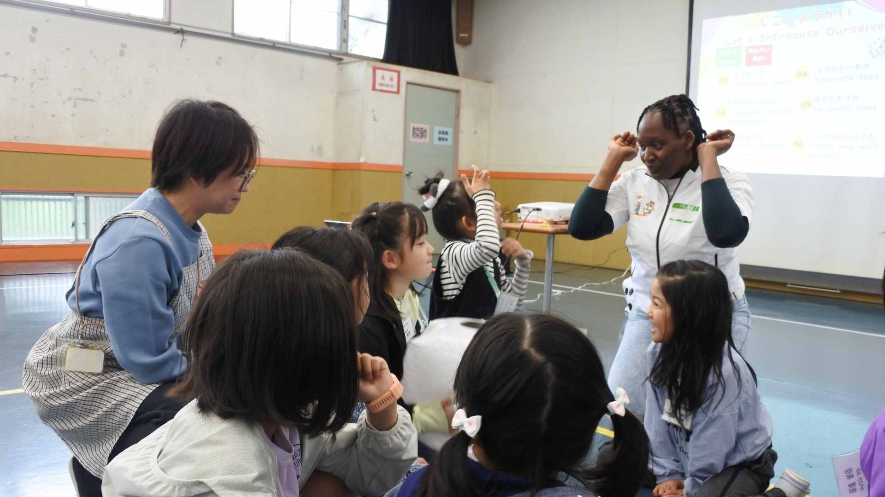
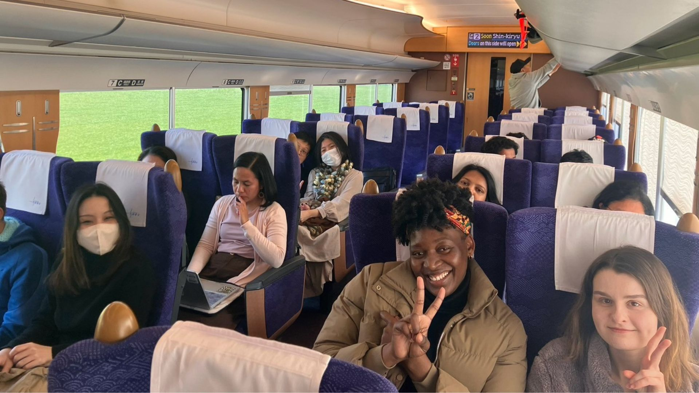
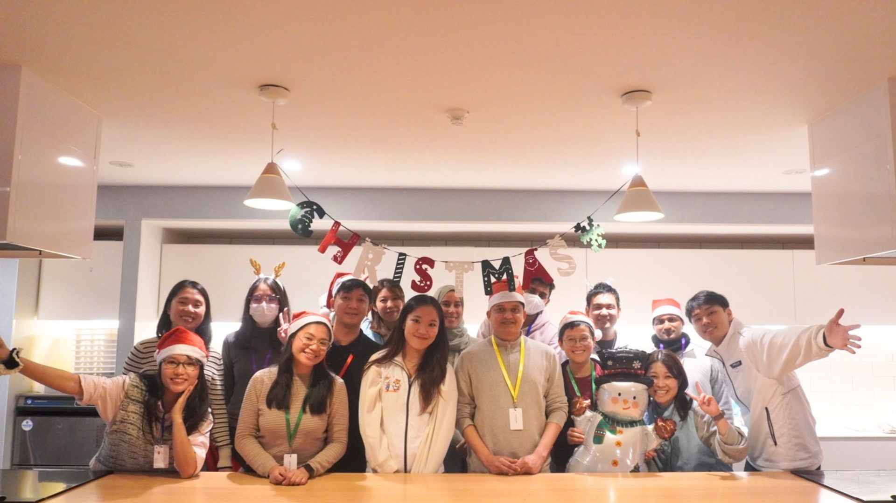
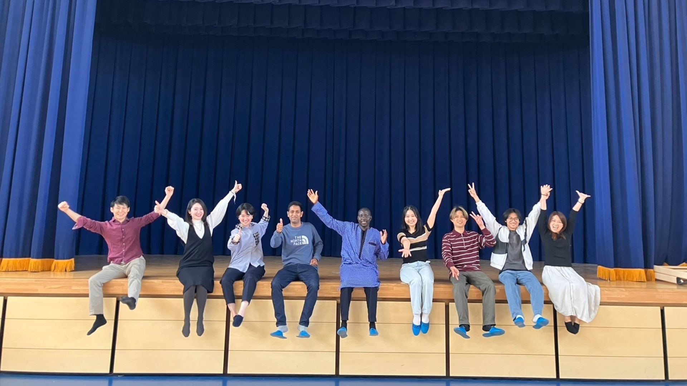
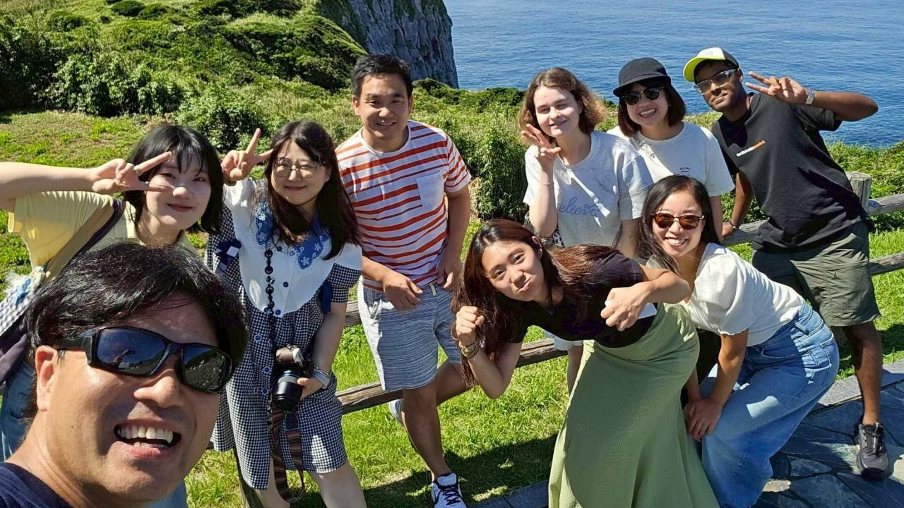
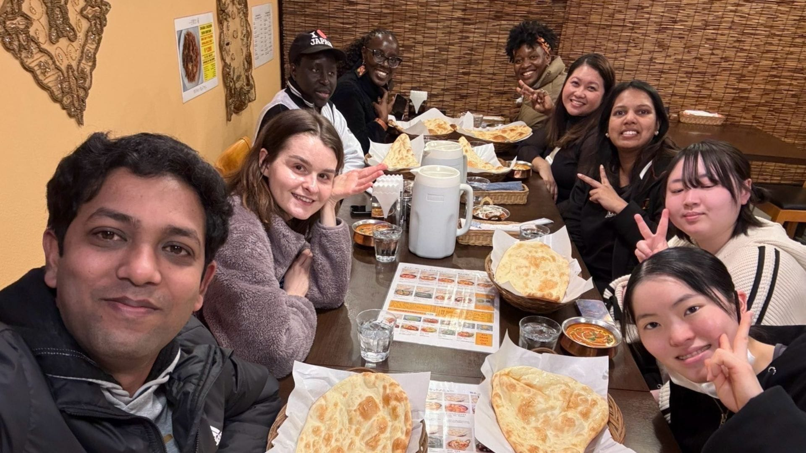

ボランティアの魅力
ナタデココのボランティアには、あなたにとっても嬉しいことがたくさんあります。
月１回からOK
無理のないペースで参加できます。学業・仕事との両立も安心。あなたのライフスタイルに合わせてご参加いただけます。
未経験・外国語不要
特別なスキルや語学力は一切不要。「子どもが好き」という気持ちだけでOK！活動しながら自然に身につく力があります。
国際交流の現場へ
外国人スタッフと協力しながら、あなた自身も異文化を体験できます。国際的な視野が自然と広がります。
スキルアップできる
子どもへの指導力・コミュニケーション力・異文化理解など、社会でも役立つ力が自然と身につきます。ボランティア証明の取得も可能です。

01
子どもとの触れ合い
外国の文化に興味津々の子どもたちと外国の文化を繋ぐとても大切な役割が期待されています。子供たちの一歩目に寄り添ってみませんか。

02
時には週末トリップも
地方でのイベントの際には、メンバーで地方に旅行することがあります。一緒に電車に乗って、地元の料理を食べて、夜は宿でトランプして、そんな経験を通じて仲を深めることが可能です。

03
メンバー交流会も
メンバーでの食事会や交流会も開かれます。時には真面目に語り合い、時には楽しく飲み食いしたり、そんな温かいコミュニティです。
こんな場面で活躍できます
活動内容に応じて、さまざまな関わり方があります。あなたのペースでご参加ください。オンラインでの参加も可能です。
-
イベント運営補助
受付・会場設営・子どもへの声かけ・外国人スタッフのサポートなど
-
ワークショップ補助
ワークショップの進行補助・材料準備・子どもの見守りなど
-
CocoSalonファシリテーター
子どもと外国人スタッフの交流をサポート（オンライン・Zoom）
-
SNS・広報
Instagram・XなどSNSの投稿作成・デザイン補助（在宅OK）
-
教材開発サポート
文化交流キットの企画・試作・フィードバック収集のサポート
-
記録・撮影
活動当日の写真・動画撮影や記録のとりまとめ
先輩ボランティアの声
実際に活動している仲間たちの声をご紹介します。
参加してくれている子供の成長はもちろん、私自身も異文化に触れるプログラムを通して、成長させてもらっています。
初めて参加した時は緊張していましたが、回数を重ねるごとに温かい雰囲気のおかげで自然体でいられるようになり、気付けば私が元気を貰っている場面ばかりです。最初は不安そうにしていた子が、関わる中で少しずつ笑顔を見せてくれるようになったとき、「この活動をやっていてよかった」と心から感じます！
英語力に自信がなくても楽しめるナタデココの活動に関わっていることは、私にとって大切な経験になっています。
Aさん（大学生・参加歴１年）
学生の時にボランティア活動に興味を持ち参加しました。最初は右も左もわからずでしたが、他のメンバーやボランティアの方のサポートで楽しく活動ができ、とても有意義な経験となっています！
Yさん（高校生・参加歴１年）
学生時代の留学経験を活かした社会活動を探していてナタデココに出会いました。仕事の空き時間を使って、無理なく活動しています。子供たちの笑顔や外国人との交流は、私にとってかけがえのない時間です！
Mさん（社会人・参加半年）
募集要項
ご応募の前にご確認ください。
| 対象 | 学生・社会人問わず、15歳以上の方 ・子どもや国際交流が好きな方であればどなたでも歓迎 ・保護者の方の同意があれば小学生や中学生のボランティアも可能 |
|---|---|
| 活動頻度 | 月1回〜（週1回以上推奨） |
| 活動場所 | 全国各地又はオンライン |
| 交通費 | 実費支給（上限あり） |
| 必要スキル | 特になし。外国語・海外経験不要 |
| 服装・持ち物 | 動きやすい服装。詳細は説明会でお伝えします |
応募の流れ
エントリーから活動開始まで、丁寧にサポートします。
エントリー
下記のエントリーボタンからフォームに必要事項を記入の上、送信して下さい。登録いただくと、ボランティア情報をメール等にてご案内します。マイページでも確認いただくことが可能です。
説明会に参加
月１回程度のボランティア説明会を行っていますので、初めて参加される方はこちらにご参加ください。
【2026年の説明会予定】
- 5/7（水）20:00-20:45 オンライン
- 6/1（月）20:00-20:45 オンライン
- 7/6（月）20:00-20:45 オンライン
- 8/3（月）20:00-20:45 オンライン
- 9/7（月）20:00-20:45 オンライン
- 10/5（月）20:00-20:45 オンライン
- 11/2（月）20:00-20:45 オンライン
- 12/7（月）20:00-20:45 オンライン
*日時変更の可能性あり。予定が合わない場合には個別対応も可能ですので、ご相談ください。
イベント参加
簡単な研修の後、先輩スタッフと一緒に実際の活動に参加。安心してスタートできます。
本格活動開始
いよいよ本格的な活動スタートです。分からないことは気軽にスタッフに相談してください。またさらに深く関わりたいという希望があれば、ナタデコ事務局に参加することも可能です。




一緒に子どもたちの笑顔をつくりましょう！
 エントリーはこちら
エントリーはこちら